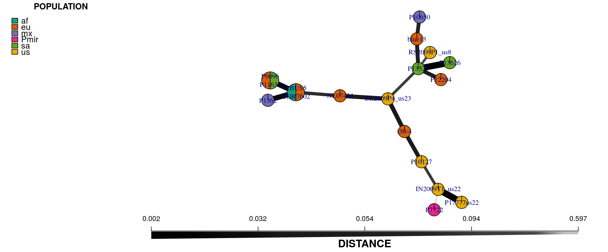
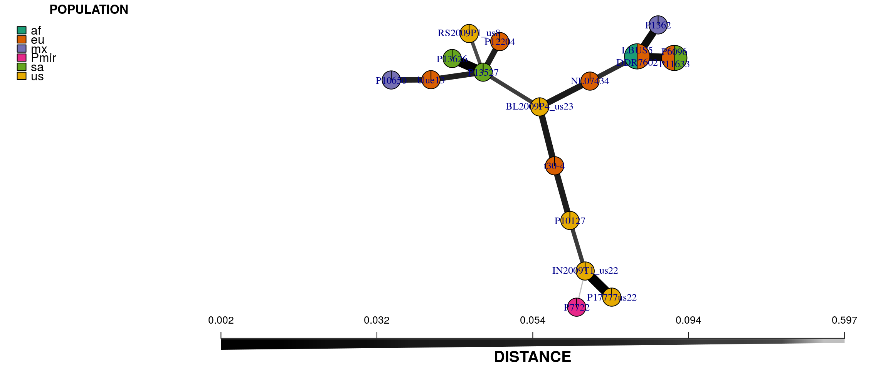

One form of analysis performed on distance matrices of data are the construction of minimum spanning networks. A minimum spanning network based on genetic data consists of nodes that represent genotypes and edges that connect the genotypes. Each genotypic node may have its size scaled based on the abundance of the genotype. In genomics data sets each genotype is typically unique, unless some form of clone correction has been implemented, so this feature may not be as useful for genomic data as it is for other marker systems. Each genotypic node is connected to its most similar genotype in the distance matrix by an edge. The length of the edges are arbitrary. However, in this implementation, the width of each edge is proportional to its distance where heavy, or wide, edges indicate a low degree of genetic distance and light, or narrow, edges indicate a large degree of genetic distance. The R package poppr includes the functions poppr.msn() and plot_poppr_msn() to create and plot minimum spanning networks.
# Calculate the MSN.
x.msn <- poppr.msn(x, x.dist, showplot = FALSE, threshold = 0)
# Set an arbitrary node size.
vertex.attributes(x.msn$graph)$size <- vertex.attributes(x.msn$graph)$size * 4
# Plot the MSN.
set.seed(9)
plot_poppr_msn(x, x.msn, palette = brewer.pal(n = nPop(x), name = "Dark2"))
Because there is some stochasticity in the plotting of minimum spanning networks we use the set.seed() function to gain consistency. For your data you should explore the use of different numbers for this seed in order to find an insightful representation of the data. In the above figure, the network does not allow ties or reticulation for when more than two samples have an identical distance among them. We can use the include.ties parameter to see where we have ties in the distance among samples.
x.msn2 <- poppr.msn(x, x.dist, showplot = FALSE, include.ties = TRUE)
vertex.attributes(x.msn2$graph)$size <- vertex.attributes(x.msn2$graph)$size * 4
plot_poppr_msn(x, x.msn2, palette = brewer.pal(n = nPop(x), name = "Dark2"))
This example demonstrates no reticulation. This is because there are no groups of genotypes that are of equal distance to one another. As your dataset grows in samples this may become a more relevant feature.